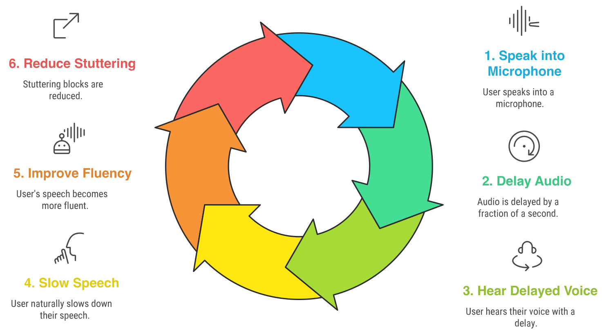
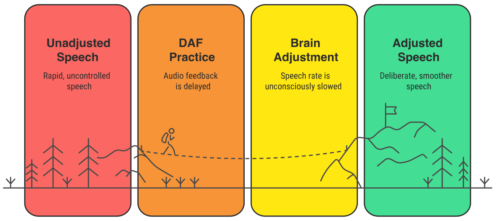
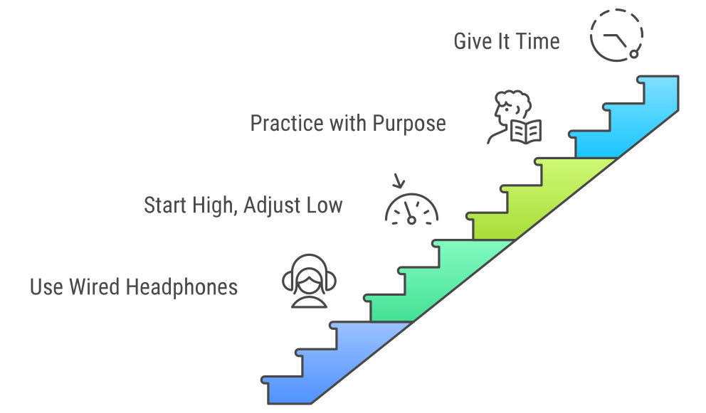
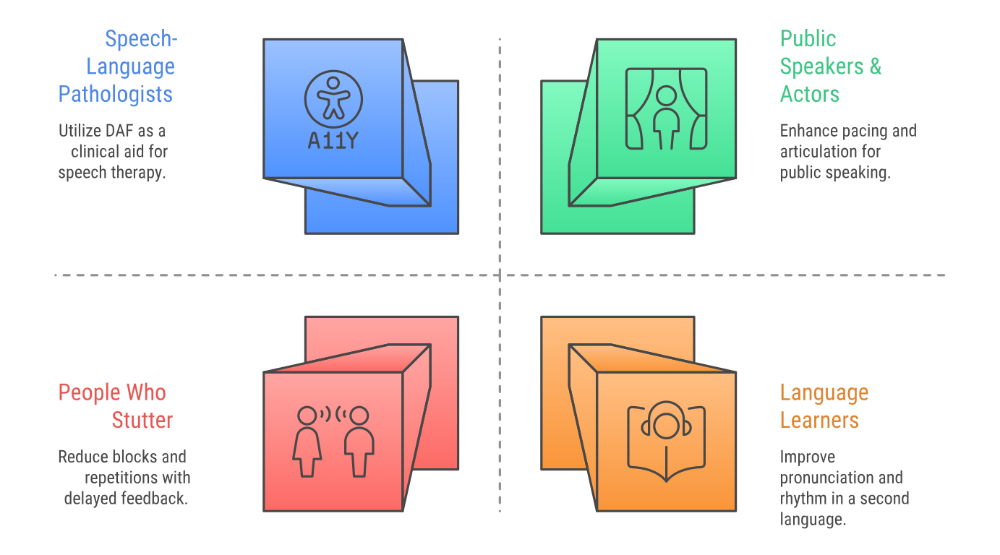
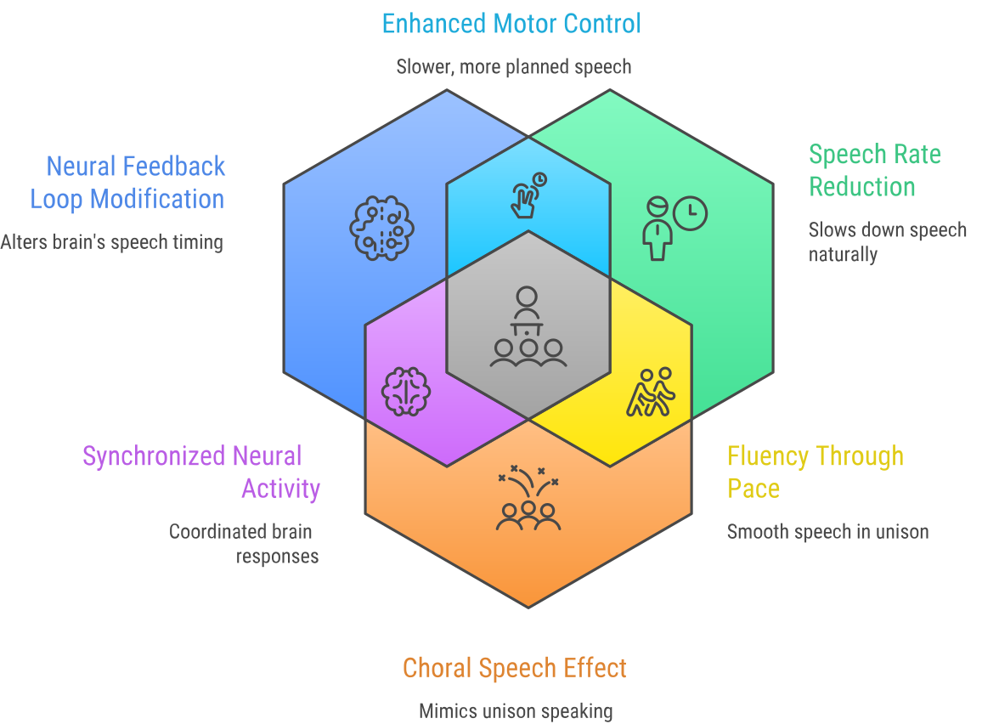

Waiting to connect to microphone
00:00
Privacy-First: Your Voice Never Leaves Your Device!
What is Delayed Auditory Feedback (DAF) for Stuttering?
If you've ever worn headphones while speaking and heard your voice played back with a slight delay, you've experienced the sensation that DAF creates. Delayed Auditory Feedback is a form of altered auditory processing where you hear yourself speak a fraction of a second later than usual.
That tiny delay naturally encourages the speaker to slow down. For those seeking effective stuttering management, this effect can be transformative. Professional Speech-Language Pathologists (SLPs) have used DAF for decades because research consistently shows it assists in fluency shaping and reduces the frequency of stuttering blocks.
We built this app to provide a non-pharmacological treatment aid that is accessible to anyone. No downloads, no signup forms, and no payment information required.
Medical Disclaimer: The DAF Online App is provided as an informational and practice tool to assist with speech fluency. It is not a substitute for professional medical advice, diagnosis, or treatment. If you or someone you care for has significant concerns about stuttering or other speech disorders, please consult a qualified speech-language pathologist (SLP) or licensed healthcare professional.
How does Auditory Feedback work in this DAF Tool?
Normally, your brain hears your voice the instant you speak. DAF introduces a delay of 20 to 500 milliseconds. Your brain notices the timing shift, and you unconsciously adjust your speech rate, slowing down and becoming more aware of articulation.
The sweet spot for the delay varies; many find 50ms to 150ms ideal.
Why Use This Online Stuttering Aid?
This DAF software functions as a web-based DAF app, eliminating the need for downloads while providing professional-grade delayed auditory feedback.
- Accessible at no cost with no premium paywalls.
- Works in your browser on mobile, tablet, or desktop.
- 100% privacy: audio never leaves your device.
- Adjustable delay (0-500ms) to find your perfect setting.
- Ideal for home practice or professional speech therapy exercises.
Getting the Best Results
Use wired headphones. Bluetooth adds 100-300ms of extra latency, which interferes with the app.
Start at 150ms. Gradually decrease the delay until you find what feels most comfortable.
Practice with purpose. Try reading a paragraph or practicing a speech to notice fluency improvements.
Ready to give it a shot? Jump to the app above and start experimenting with what works for you.
What Users Are Saying
“This app helped me slow down and speak more clearly. I use it before every presentation.”
- Alex R.
“As a speech therapist, I recommend this to clients who need at-home fluency practice.”
- Dr. L. Moreno
Who Can Benefit from DAF?
DAF supports anyone aiming to enhance speech clarity and rhythm.
The Science Behind DAF
Delayed Auditory Feedback isn't new. Researchers first studied it in the 1950s. Back then, they noticed that when people who stutter heard their own voice on a tiny delay, their speech often cleared up instantly.
Modern neuroscience has given us a better look at why this actually happens:
Fixing the "Feedback Loop"
Stuttering is often linked to how the brain processes its own speech timing. DAF shifts that timing, forcing the brain to stop over-relying on external sound and lean more on its internal timing mechanisms. Research on speech motor control shows this can bypass the "glitch" that causes a block.
The Natural Slow-Down
It's almost impossible to speak fast when you hear your voice trailing behind you. This app naturally encourages Speech Rate Reduction. By slowing down, you're giving your brain the extra milliseconds it needs for speech motor planning, which makes disfluencies much less likely.
The "Choral Speech" Effect
Have you ever noticed that most people don't stutter when they sing or speak in a crowd? That's called the choral effect. DAF mimics this by making it sound like someone is speaking right along with you, which can dramatically boost fluency.
While the science is solid, everyone's brain is wired differently. Some people see a huge change immediately, while others use it as a secondary app. It's always best to use this as one part of a bigger plan with a qualified speech therapist.
Frequently Asked Questions (FAQ)
What should I read while using the DAF app?
You can read anything that helps you practice your speech. The important part is to focus on speaking clearly and fluently while listening to the delayed feedback. Complicated texts are not ideal for this purpose. Try reading simple passages, children's books, or even practicing everyday conversations.
What delay time should I use for stuttering?
Most people who stutter find the best results with a delay between 50-200 milliseconds. Start with 200 ms and gradually decrease until you find the delay that feels most comfortable and produces the smoothest speech. Every individual responds differently, so experimentation is key.
How long should I practice with DAF each day?
Most speech therapists recommend starting with 10-15 minute practice sessions, 2-3 times per day. As you become more comfortable, you can extend sessions to 20-30 minutes. Consistency is more important than duration—regular daily practice yields better results than occasional long sessions.
Why should I avoid Bluetooth headphones with DAF?
Bluetooth headphones introduce additional audio latency (typically 100-300 ms) that interferes with the precise delay timing needed for effective DAF therapy. This extra delay makes it difficult to achieve the optimal feedback timing. Wired headphones provide immediate, consistent audio transmission for better results.
What should I do if I hear an echo or feedback loop?
Echo or feedback usually occurs when sound from your speakers is being picked up by your microphone. The solution is simple: use headphones instead of speakers. This keeps the delayed audio isolated to your ears and prevents it from being re-recorded by the microphone, eliminating the feedback loop.
Is my audio data recorded or sent anywhere?
No. All audio processing happens entirely within your browser on your local device. No audio is recorded, stored, or transmitted to any server. Your privacy is completely protected, and you can use the app with full confidence.
What is Delayed Auditory Feedback (DAF)?
Delayed Auditory Feedback (DAF) is a speech therapy technique that plays a person's voice back to them with a brief delay, helping individuals who stutter improve their fluency.
How do I use the DAF app?
Using the Delayed Auditory Feedback (DAF) app is simple. Follow these steps:
- Connect your microphone: Ensure your microphone is enabled and your browser has access to it.
- Use headphones: For best results, use wired headphones to prevent audio feedback and delay caused by Bluetooth devices.
- Adjust the delay time: Move the delay slider to adjust the feedback delay. Start with a high delay (around 200 ms) and gradually decrease as needed.
- Adjust microphone gain: Use the microphone boost slider to increase or decrease the sensitivity of your microphone.
- Click "Start DAF": Press the button to begin receiving delayed auditory feedback in real time.
- Practice speaking: Once activated, speak into the microphone. The delayed feedback will help you manage your speech fluency and reduce stuttering.
You can always adjust the delay time and microphone gain settings to fine-tune your experience.
How does this Online DAF App work?
This app uses your browser's microphone to capture your voice, then plays it back with a customizable delay. All processing happens locally on your device for real-time feedback and maximum privacy.
Do I need to install anything?
No installation is needed. The DAF app runs entirely in your browser—just allow microphone access and start using it immediately.
Is the app free to use?
Yes! The DAF Online App is completely free with no sign-up, subscription, or hidden fees.
Why do I need headphones?
Headphones prevent audio feedback (echo or howling) and ensure the delayed audio is only heard by the speaker—not re-recorded by the mic.
Can DAF help with stuttering?
Yes, research shows that DAF can significantly help reduce stuttering symptoms. By introducing a slight delay in auditory feedback, DAF encourages slower, more deliberate speech patterns that can reduce blocks, repetitions, and prolongations commonly experienced by people who stutter.
Is this app as effective as expensive DAF devices?
While dedicated DAF devices have a high price tag, this free online app provides the same core functionality. The main difference is portability: dedicated devices are wearable throughout the day, while this app requires a computer or smartphone with headphones. For practice sessions and therapy exercises, this app is equally effective.
Does DAF work on mobile phones and tablets?
Yes, the DAF Online App works on most modern smartphones and tablets, including iOS (iPhone/iPad) and Android devices. Use Safari on iOS devices or Chrome on Android for the best experience. Make sure to grant microphone permissions when prompted.
Can speech therapists use this DAF app with clients?
Absolutely. Many speech-language pathologists use DAF as part of their stuttering therapy programs. This free online app is perfect for in-clinic demonstrations, therapy sessions, and as a homework app for clients to practice between appointments. It provides professional-grade DAF functionality at no cost.
What browsers support the DAF app?
The DAF Online App works on all modern browsers including Google Chrome, Mozilla Firefox, Microsoft Edge, and Safari. For the best experience, we recommend using the latest version of your browser. Chrome and Edge typically provide the most consistent audio processing performance.
Can DAF help with other speech disorders besides stuttering?
Yes, DAF has been shown to benefit individuals with various speech challenges including cluttering, speech apraxia, Parkinson's disease-related speech issues, and articulation disorders. It can also help language learners improve pronunciation and speaking rhythm. The slowed speech pattern encourages greater awareness and control.
Is DAF therapy scientifically proven?
Yes, Delayed Auditory Feedback has been researched extensively since the 1950s and has substantial scientific support as a fluency-enhancing technique. Numerous peer-reviewed studies have demonstrated its effectiveness in reducing stuttering frequency and severity. It remains one of the most widely used assistive technologies in speech therapy.
Can I use DAF during video calls or online meetings?
Using DAF simultaneously with video conferencing software is technically challenging because both applications compete for microphone access. For video calls, consider practicing with DAF before the meeting to warm up your speech fluency, rather than trying to use it during the call itself.
What's the difference between DAF and FAF (Frequency Altered Feedback)?
DAF (Delayed Auditory Feedback) introduces a time delay in hearing your voice, while FAF (Frequency Altered Feedback) shifts the pitch of your voice up or down. Both are altered auditory feedback techniques used in stuttering therapy. Some individuals respond better to one method over the other, and many commercial devices combine both DAF and FAF features.
Will DAF cure my stuttering permanently?
DAF is a fluency-enhancing tool, not a cure for stuttering. It helps manage stuttering symptoms and improve speech fluency while in use. Many people find that regular practice with DAF improves their overall speech control even when not using the device. For comprehensive treatment, DAF is most effective when combined with other speech therapy techniques under professional guidance.
Start Your Speech Fluency Practice
Ready to begin? Use the app at the top of the page to find your ideal delay.
Want to Dive Deeper?
While this app is a great place to start, there is a wealth of expert knowledge available if you're looking for long-term support or the hard science behind the technology.
- If you need community support or educational guides, The Stuttering Foundation is the gold standard for personal resources.
- For a professional look at diagnosis and treatment standards, visit ASHA (the American Speech-Language-Hearing Association).
- For a clear breakdown of why stuttering happens and current medical research, check out the NIDCD Fact Sheet.